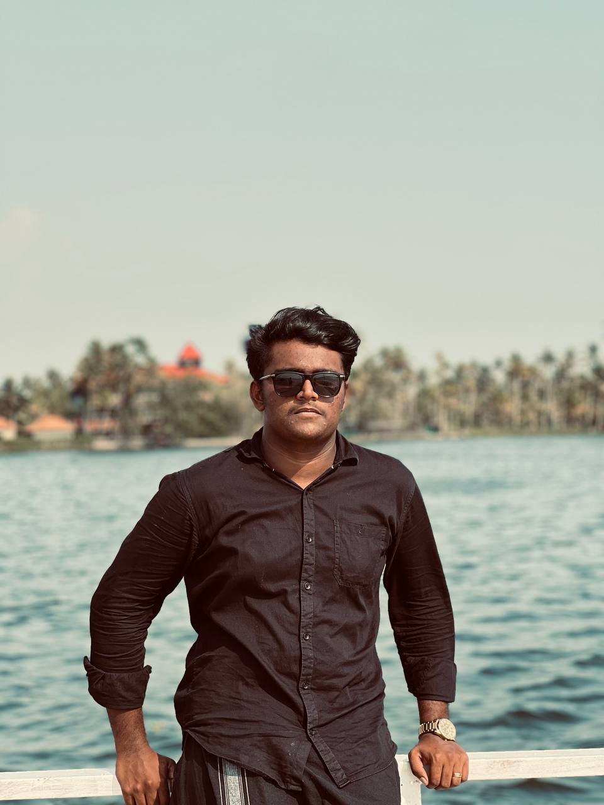

As a passionate Software Engineer with experience in both front-end and back-end technologies, I am constantly honing my skills and adapting to the evolving tech landscape. I am currently working at Diviso Softtech, where I’ve been thriving since July 2024. In this role, I am expanding my expertise in Core Java, Object-Oriented Programming (OOP), Flutter, Spring Boot, and MySQL, while contributing to dynamic projects in an on-site environment in Palakkad, Kerala. Before joining Diviso Softtech, I gained valuable experience as an Associate Software Engineer Java Fullstack at LXI Technologies. During my six months there, I worked on full-stack development projects, building a strong foundation in both the back-end and front-end. My time at LXI Technologies provided me with hands-on experience with technologies like HTML, Spring Boot, and GitHub, helping me grow both technically and professionally. I am always eager to take on new challenges, learn, and push the boundaries of my capabilities. I believe in continuous growth, and I’m dedicated to evolving as a software professional while delivering impactful solutions.
Hire me